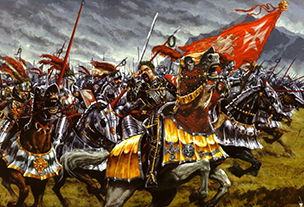

Journal Entries
R. Mathiason personal log: Journal Entry #397
The preceeding days were uneventful. This made the wait all the more unbearable. The walls of Titarious seemed to echoe with a ressounding silence, as even the wildlife seemed to sense the uncomming evil, for even they fled with the capable villagers. Then the storms began. Two days before the foes expected arrival, strange storms began rolling towards us, blanketing the land in an unnatural darkness with flashes of mysitcal crackling energy. It was then we realized those villagers willing, and fortunate enough, to pick up and leave their homes were the lucky ones. They would be spared the unknown chaos which was to follow
R. Mathiason personal log: Journal Entry #345
As I wiped the sweat from my blood stained brow, there was a moments pause in the chaos. As if the center of a great whirling tornado of steel and anguish suddenly passed over. What should have been relief from the chaos of death was only a moment for pure dread to overwhelm the heart. The eerie calm of the oncoming battle only made the presence of The great Warlord Khorn, all the more unbearable. With slow terrifying creaks, he gazed over his army. Slowly he raised his dreadful axe and his scarred helm turned towards our forces. My eyes were locked onto the black depth of his helm, I could feel his dreadful gaze upon me. Slowly, rumbling with more and more force, the horde began to chant. BLOOD FOR THE BLOOD GOD! BLOOD FOR THE BLOOD GOD! BLOOD FOR THE BLOOD GOD! 
R. Mathiason personal log: Journal Entry #345 (continued)
... and the horde was upon us.
Source: The Approach: Storm Photo